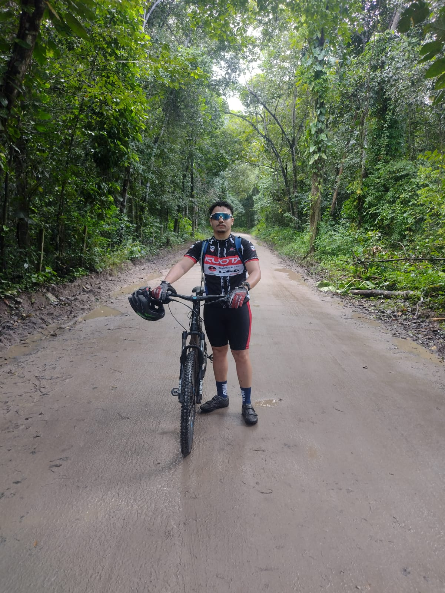
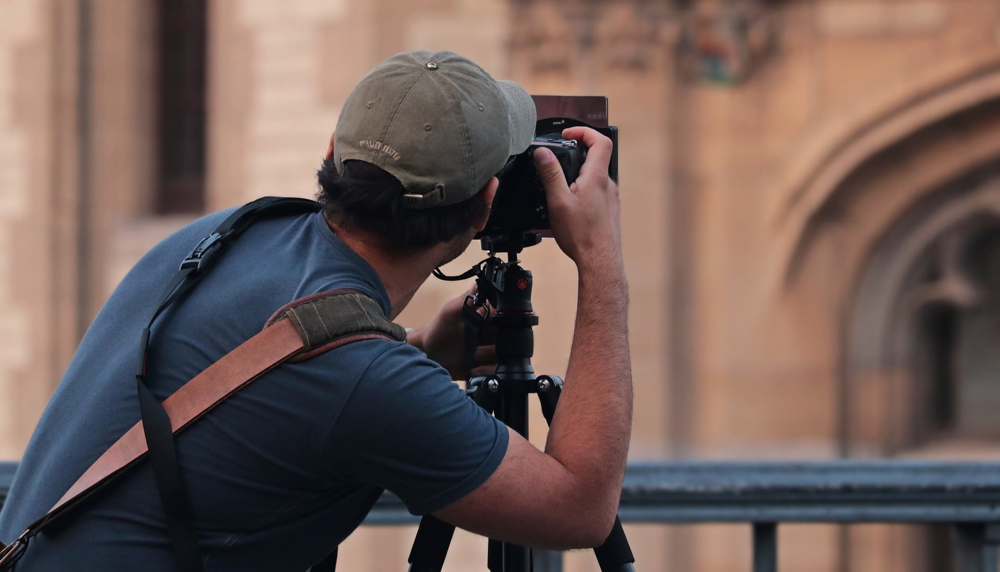
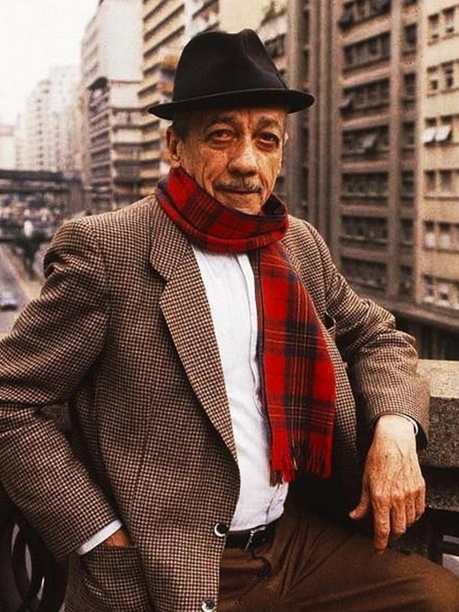
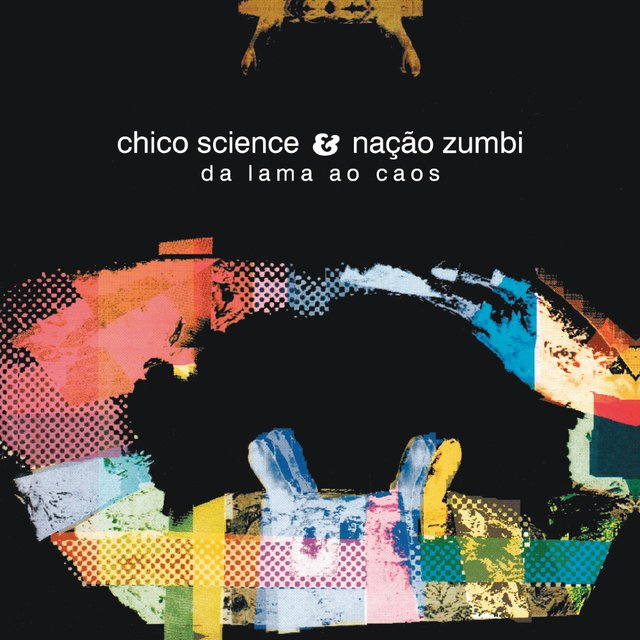
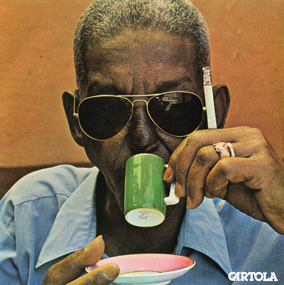

Quem sou eu?
Olá, me chamo Eduardo Denis, 24 anos. Sou de Recife-Pernambuco. Atualmente sou estudante da
UNINTER no curso de Análise e Desenvolvimento
de Sistemas. Tenho muito interesse na área de desenvolvimento mobile android, utilizando kotlin. Sou
um profissional e dedicado e apaixonado na minha área de atuação. No momento estou trabalhando como
suporte de help desk em uma empresa de sistemas ERP para varejo e restaurantes. Estou em busca de
constante evolução e aprendizado de novas tecnologias.
Habilidades e competências:
Desenvolvimento Mobile Android com Kotlin
Comunicação
Organização
Inteligência emocional
Adaptabilidade
Hobbies
Sou uma pessoa que ama esportes. Sou corredor de rua amador e minha maior distância corrida
até o momento foram 22km. Também sou ciclista e gosto de pedalar aos fins de semana para tomar café
da manha em alguma outra cidade, preferencialmente em cidades mais afastadas da capital. Pulo corda
todos os dias e sou um entusiasta de fotografia de natureza e fotografia macro.



Estilo Musical
Considero-me uma pessoa bastante eclética e curto de tudo um pouco, embora o meu maior apreço é
por
musicas antigas. Alguns exemplos de artistas e bandas são: Adoniran Barbosa, Cartola, Zé Ramalho,
Engenheiros do Hawaii, Chico Science e Nação Zumbi entre outros artistas.


